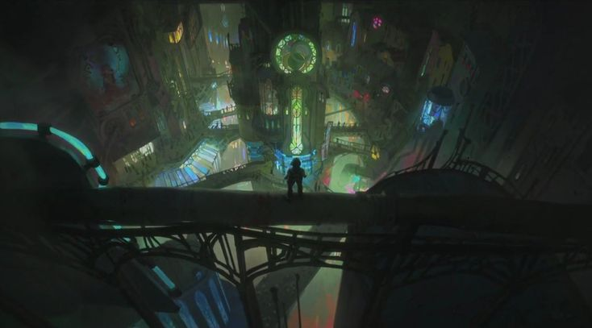
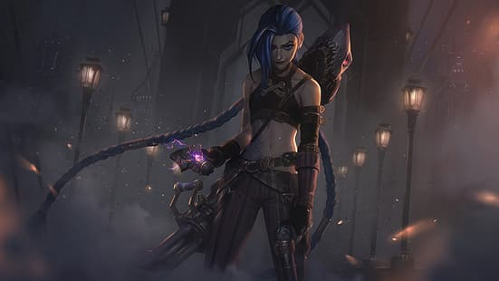
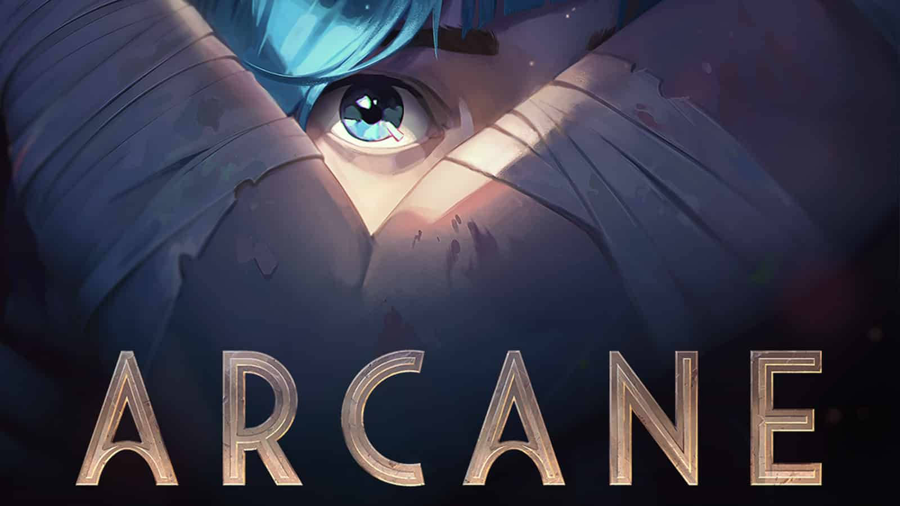
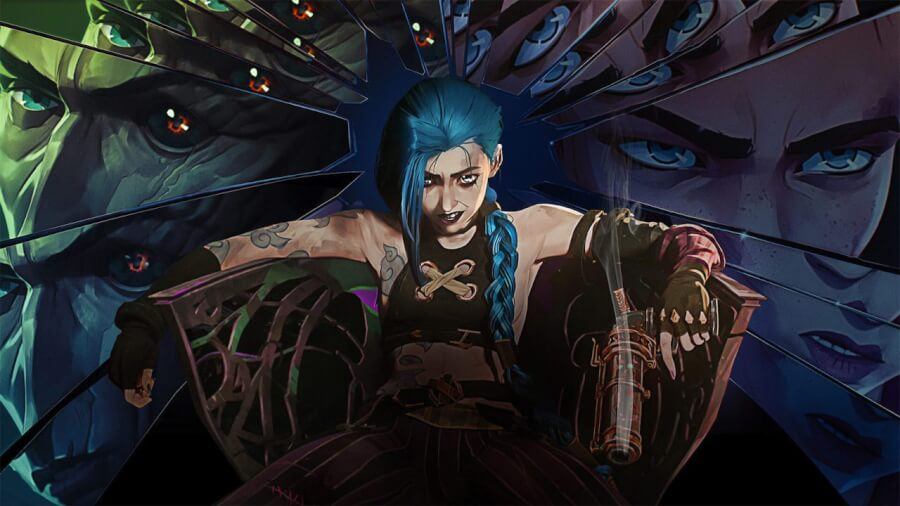
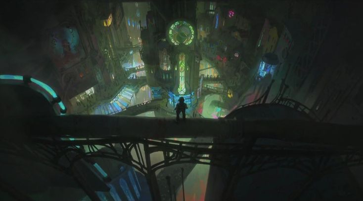
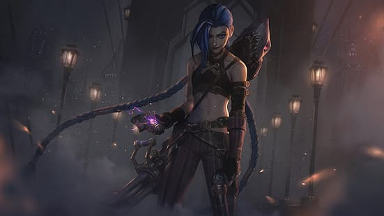
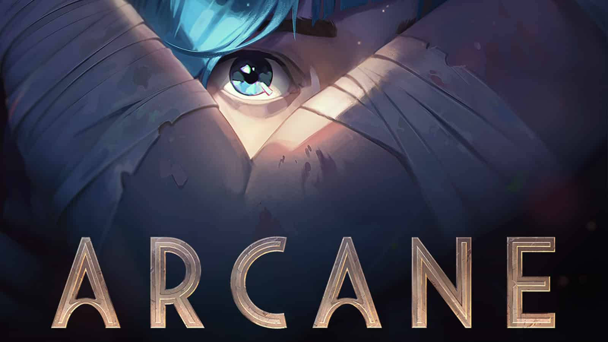
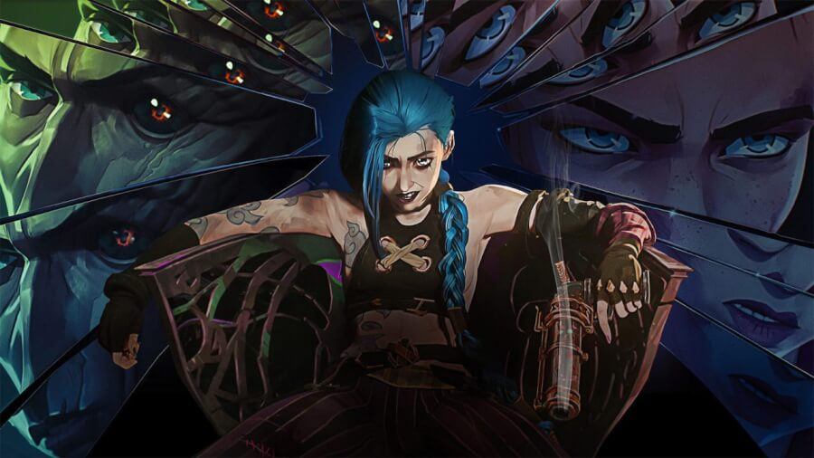

AZ ARCANE (A KÉPERNYŐN ARCANE: LEAGUE OF LEGENDS NÉVEN) EGY ANIMÁCIÓS AKCIÓ-KALANDSOROZAT, AMELYET CHRISTIAN LINKE ÉS ALEX YEE KÉSZÍTETT A NETFLIX SZÁMÁRA. A FORTICHE A RIOT GAMES FELÜGYELETE ALATT KÉSZÍTETTE, A LEAGUE OF LEGENDS ARCANE IDŐVONALÁN JÁTSZÓDIK, ÉS A JÁTÉKOK TÖBB KARAKTERÉRE ÖSSZPONTOSÍT, KÜLÖNÖSEN VI-RE ÉS JINX-RE. A SOROZAT ELŐSZÖR 2021 NOVEMBERÉBEN JELENT MEG. A LEAGUE OF LEGENDS MÖGÖTTI VILÁGRA ÉPÜLŐ ARCANE BELEMERÜL A KÉNYES EGYENSÚLYBA A GAZDAG, UTÓPISZTIKUS PILTOVER ÉS A ZAUN ELNYOMOTT FÖLDALATTI RÉSZE KÖZÖTT. RUNETERRA-SZERTE A „HALADÁS VÁROSAKÉNT” ISMERT VÁROSOKAT A LEGRAGYOGÓBB ELMÉK KÖZÜL SOKAN OTTHONUKNAK NEVEZIK. DE A HEXTECH LÉTREHOZÁSA, AMELY EGY MÓDJA ANNAK, HOGY BÁRKI IRÁNYÍTSA A MÁGIKUS ENERGIÁT, VESZÉLYEZTETI EZT AZ EGYENSÚLYT. A TÖRTÉNET KÉT IKONIKUS LEAGUE OF LEGENDS KARAKTER EREDETÉT KÖVETI NYOMON – ÉS AZT AZ ERŐT, AMELY ELSZAKÍTJA ŐKET EGYMÁSTÓL. AZ ALAPJÁUL SZOLGÁLÓ JÁTÉKHOZ HASONLÓAN AZ ARCANE IS A „16+” KÖZÖNSÉGET CÉLOZZA MEG, ÉS TÖBB FELNŐTT TÉMÁVAL FOGLALKOZIK MAJD.
 






